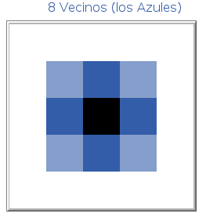
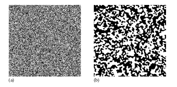
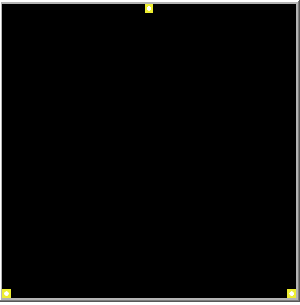
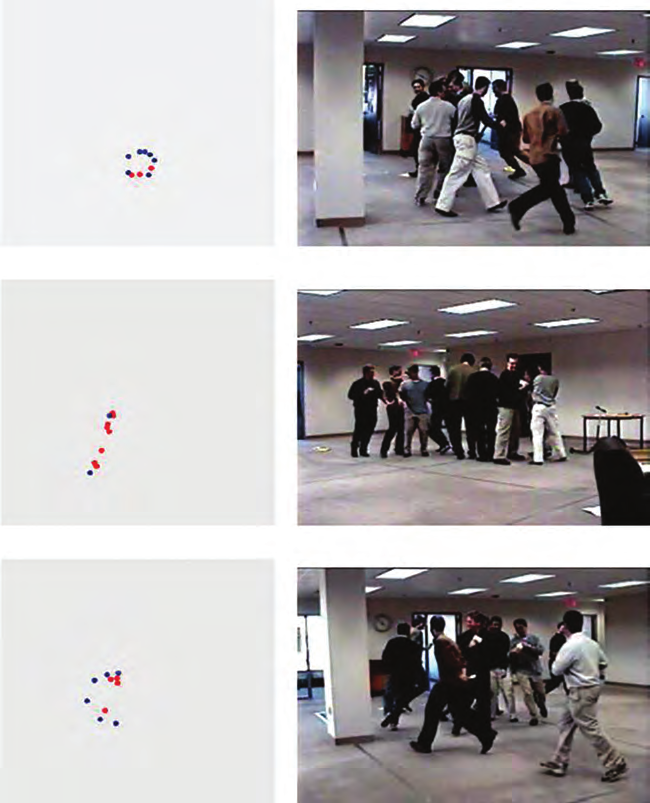

13 Proyectos Intermedios
13.1 Majority model
En el modelo de chismes, una celda se vuelve negra si escucha el chisme de uno de sus vecinos, por lo tanto este es un modelo de interacción persona a persona. Ahora consideremos un modelo en el que una célula cambia de estado de acuerdo con la información de todos sus vecinos. Por ejemplo, las personas pueden adoptar una moda solo si la mayoría de sus amigos ya lo han adoptado. Una vez más, el la simulación consistirá en celdas cada una de las cuales tiene dos estados: blanco y negro. El modelo más simple tiene una sola regla:
- El nuevo estado de una celda es el estado de la mayoría de los vecinos de Moore de esa celda ( o el estado anterior de la celda si el número de vecinos blancos es el mismo) hay ocho vecinos de Moore.

Por lo tanto, la regla dice que una celda pasa a blanca si hay cinco o más celdas blancas que la rodean, y pasa a negra si hay cinco o más más celdas negras a su alrededor, o permanece en su estado anterior si hay cuatro blanco y cuatro negros.

A partir de una distribución aleatoria de celdas blancas y negras, el resultado de ejecutar esta regla es un mosaico de pequeños bloques blancos y negros (Fig. ure 7.9 (b)). Las celdas rodeadas por celdas de otro color cambian al color de la mayoría, de modo que las celdas aisladas se unen para formar bloques de un color. celdas que tienen celdas mitad blancas y mitad negras como vecinas permanecer sin cambios y forman límites estables a estos bloques. Una vez que las celdas han logrado este patrón moteado, ya no hay ninguna oportunidad para cambio. Sin embargo, la situación es muy diferente, con una pequeña alteración en el regla. Supongamos que algunas personas son a veces más susceptibles a los cambio0 de la moda que otros. Algunas celdas blancas cambiarán a negro si tienen tan solo cuatro vecinos negros, mientras que otras solo cambiarán si tienen al menos seis vecinos negros. Del mismo modo para las células negras. La probabilidad de ser susceptible o resistente a la moda se distribuye de manera aleatoria en el modelo, de modo que, en general, exista el mismo número de celdas que requieran seis vecinos del otro color para cambiar que de aquellas que requieren solo cuatro para cambiar. En resumen, en esta modificación del modelo, ya no tenemos todas las celdas iguales, sino una variación en la individual de la celda.

13.2 Patron Misterioso
A veces encontramos que simples comportamientos, cuando son repetidos por muchos individuos o incluso por un pequeño número de ellos pero repitiendo muchas veces algún comportamiento, se pueden producir patrones inesperados. En esta actividad, construiremos un modelo sencillo que tiene individuos (que llamaremos agentes) con un comportamiento muy sencillo. Colocaremos un número fijo de agentes en cada uno de los tres vértices de un triángulo equilátero.

El comportamiento de cada uno de estos agentes es muy sencillo y es el siguiente, en cada paso del proceso el agente debe:
• Seleccionar al azar una de los vértices del triángulo
• Moverse la mitad de la distancia hacia el vértice seleccionado y a continuación detenerse.
• Marcar su nueva ubicación con un punto blanco.A veces llamaremos a nuestros agentes tortugas por razones que serán claras más adelante, para empezar entonces, cada tortuga o agente estará ubicado en uno de los vértices del triángulo. ¿Qué patrón (si existe) dará el resultado de las tortugas siguiendo estas sencillas reglas definidas? ¿Que figura se puede formar si se unen esos puntos blancos dejados por los agentes? ¿Cuántas repeticiones de los pasos anteriores tardará antes de que emerga o surga un patrón interesante? Podemos intentar responder a las preguntas arriba haciendo el ejercicio sobre un papel, pero sería probablemente muy tedioso, y demoraríamos mucho antes de que ese “patrón misterioso” se revele.

13.3 Heroes y Cobardes
Ahora vamos a crear un modelo de otro juego, un juego que llamamos Heroes y Cobardes. Los orígenes de este juego son difíciles de precisar. En las décadas de 1980 y 1990, una compañía italiana llamado el grupo de teatro Fratelli utilizó el juego como una actividad de improvisación. En el 1999 en la conferencia Embracing Complexity, celebrada en Cambridge, Massachusetts, el grupo Fratelli usó este juego con los participantes de la conferencia, y esta parece ser la primera instancia pública del juego. El juego también está relacionado con un juego llamado “Party Planner” propuesto por A. K. Dewdney en su columna “Computer Recreations” en Scientific American (Septiembre de 1987) y reimpreso en el libro The Magic Machine (1990). Para jugar se necesita un grupo de personas. El juego comienza pidiéndole a cada persona que eliga a otra persona para que sea su “amigo” y otra para que sea su “enemigo”. " Hay dos etapas del juego. En la primera etapa, a todos se les dice que actúen como “coabredes”
- Actuar como cobarde implica asegurarse que su amigo esté siempre entre usted y su enemigo (efectivamente, escondiéndote de tu enemigo detrás de tu amigo de una manera cobarde).
Cuando la gente jugaba en esta etapa del juego, el centro de la sala quedaba vacía ya que la gente “huye” de su enemigo.
En la segunda etapa del juego, se les pidió a las personas que se comportaran como “héroes”, es decir:
- Moverse entre su amigo y enemigo (protegiendo efectivamente a tu amigo de tu enemigo de manera heroica).
Cuando la gente jugaba la segunda etapa, el centro de la habitación queda muy llena. Fue una diferencia dramática y generó risas y curiosidad.Desde la conferencia, el juego se extendió a la incipiente comunidad de académicos de complejidad,ya que fue un buen ejemplo de comportamiento emergente sorprendente, Eric Bonabeau, presidente de Icosystems y un conocido científico de complejidad y modelador basado en agentes, creó un versión del juego en 2001. Más tarde, Bonabeau creó un modelo del juego basado en agentes que se ejecuta en el sitio web de Icosystems (Bonabeau, 2012). Stephen Guerin, el presidente del grupo Redfish, también creó una temprana versión del juego y lo presentó en 2002 en la Duodécima Conferencia Internacional Anual de la Sociedad de Teoría del Caos en Psicología y Ciencias de la Vida. Algunas imagenes del juego se encuentran en la siguiente figura:

Desde entonces, muchas versiones diferentes del juego han aparecido en varios lugares dentro de la comunidad de sistemas complejos. Además de codificar las primeras versiones, Eric Bonabeau, Stephen Guerin y otros han llevado a la gente a jugarlo en las conferencias. Una variante de tres jugadores aparece en la Guía de pensamiento de sistemas (Sweeney & Meadows, 2010). El juego no siempre aparece bajo el nombre de “Héroes y cobardes”; de hecho, tiene muchos nombres diferentes. Bonabeau lo llama “agresores y defensores” (Bonabeau y Meyer, 2001). También lo hemos escuchado llamado “Amigos y enemigos” y “Espadas y escudos. Construir el modelo es bastante sencillo, lo invito a construirlo:

13.4 Termitas
Philip Morrison, el físico y educador científico del MIT, tiene una historia sobre su infancia. Cuando Morrison estaba en la escuela primaria, uno de sus maestros describió la invención del arco como uno de los hitos centrales y definitorios de la civilización humana. El arco adquirió un especial significado para el joven Morrison. Sentía cierto tipo de orgullo cada vez que veía un arco. Muchos años después, cuando Morrison aprendió que las termitas también construyen arcos, estaba bastante sorprendido , ganó un nuevo escepticismo sobre todo lo que le enseñaron en la escuela, y un nuevo respeto por las capacidades de las termitas. Desde entonces, Morrison se ha preguntado sobre los límites de lo que las termitas pueden hacer. Si pueden construir arcos, ¿por qué no estructuras más complejas? Dado suficiente tiempo, Morrison se preguntaba si las termitas podrían construir un radiotelescopio, Probablemente no. Pero las termitas se encuentran entre los maestros de la arquitectura del mundo animal. En las llanuras de África, las termitas construyen montículos gigantes, nidos que se elevan más de diez pies de altura, miles de veces más alto que las termitas mismas Dentro de los montículos hay intrincadas redes de túneles y cámaras. Ciertas especies de termitas incluso usan trucos arquitectónicos para regular la temperatura dentro de sus nidos, en efecto convierten sus nidos en elaborados sistemas de aire acondicionado. Como señala E. O. Wilson, “Toda la historia de las termitas … puede verse como un escape lento por medios de innovación arquitectónica a partir de la dependencia de la madera podrida para hacer refugios” Cada colonia de termitas tiene una reina. Pero, como en las colonias de hormigas, la termita reina no le “dice” a los trabajadores de termitas qué hacer. (De hecho, parece justo preguntarse si la designación “reina” es un reflejo de prejuicios humanos. “Reina” parece implicar “líder”. Pero la reina es más una madre para la colonia que un líder.) En el sitio de construcción de termitas no hay unjefe de construcción, nadie a cargo del plan maestro. Más bien, cada termita lleva a cabo una tarea relativamente simple. Las termitas son prácticamente ciegas, por lo que deben interactuar entre sí (y con el mundo que los rodea) principalmente a través de sus sentidos del tacto y el olfato. Pero de las interacciones locales entre miles de termitas, emergen estructuras impresionantes. la construcción de un nido de termitas completo sería un proyecto monumental (que va más all+a de nuestros alcances). Así que considere un objetivo más modesto:
- constuir un modelo de termitas artificiales para recolectar astillas de madera y colocarlas en pilas.
Las termitas reales en realidad no llevan astillas de madera de lugar a lugar. Por el contrario, comen trozos de madera, luego construyen estructuras con “cemento fecal” que producen de la madera digerida). El desafío es encontrar una estrategia descentralizada para agregar algun orden a la colección desordenada de astillas de madera. Al inicio las astillas de madera se dispersan al azar en el mundo. Pero a medida que se ejecuta el modelo, las termitas deben organizar la madera, en unas pocas pilas ordenadas. ¿Existirá una estrategia simple? Suponga que cada termita individual sigue las siguientes reglas:
- Si no lleva nada y choca con una astilla de madera la recoje.
- Si lleva una astilla de madera y choca con otra astilla de madera, baja la astilla de madera que lleva.
Estas reglas parecen demasiado simples. No hay un mecanismo para evitar que las termitas saquen las astillas de las pilas existentes. Entonces mientras las termitas colocan nuevas astillas de madera en una pila, otras termitas podrían estar quitándolas, las reglas decritas parecen una buena receta para no llegar a ninguna parte. Pero, si dejamos de lado el escepticismo , podemos intentar seguir estrategia simple y construir los siguientes procedimientos:
- Avanzar de manera aleatoria (wiggle)
- Recojer astillas de madera si encuentran una y no llevan ninguna
- Depositar astillas de madera si llevan una y se encuentran con otra.
¿Podría construir el modelo?